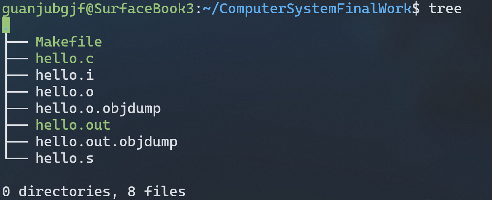

# 第1章 概述
# Hello简介
hello的初始状态是作为C语言等高级语言源代码hello.c存储在磁盘中。
hello.c经过预处理，删除注释，插入了库函数，成为了hello.i。
hello.i下一步需要经过编译器。编译器进行词法、语法、语义分析，转换成对应的汇编代码，加入了相应的伪指令成为了hello.s。
hello.s经过汇编器，被翻译成可重定位目标程序hello.o，在这个阶段汇编器生成ELF格式的可重定位文件，包含各种重定位条目、符号表、数据段、代码段等区段。
hello.o在链接阶段，加入了各种动态库和静态库的重定位条目，通过链接器，与其他必要的可重定位目标文件、共享库链妾，并对符号进行重定位，最后生成可执行目标文件hello.out。
hello.out程序是静止的，在运行中，hello.out变成了一个进程。Shell 通过fork为hello.out创建新的子进程，接下来通过execve在相应进程上加载运行hello.out程序。
hello.out的运行，需要一定的内存空间空间，Shell调用mmap函数创建新的虚拟内空间，并构建内存映射。
在运行过程中，通过内核和各种硬件如寄存器、CPU、MMU、TLB、三级Cache、四级页表等来进行内存的翻译、访问和加速。
在并行程序的视图中，内核通过上下文切换调度hello。out进程，为hello.out的运行分配时间片，不断切换hello.out和其他进程的运行，看起来好像是在同时运行一样。
当hello.out在运行中出现异常时，内核提供了各种异常处理程序来解决这些问题。hello.out同样页要接受内核发出的各类信号，信号机制帮助hello.out在运行时对外部指令做出反应。
最后，在hello程序结束后，父进程Shell 调用waitpid或wait函数回收hello.out进程，内核释放内存，删除为hello.out创建的所有空间。
# 环境与工具
Windows 10 dev WSLg – Ubuntu 20.04.2 make gcc gdb objdump readelf edb
# 中间结果
文件结构如下：

各个文件的说明如下：
| 文件 | 说明 |
|---|---|
| Makefile | 用于make操作 |
| hello.c | hello源代码 |
| hello.i | gcc -E预处理结果 |
| hello.o | gcc -c汇编结果 |
| hello.o.objdump | hello.o的反汇编结果 |
| hello.out | ld链接结果，可执行文件 |
| hello.out.objdump | hello.out的反汇编结果 |
| hello.s | gcc -S编译结果 |
# 本章小结
本章简单介绍了 hello 的 p2p，020 过程，列出了本次实验环境、中间结果文件和作用。